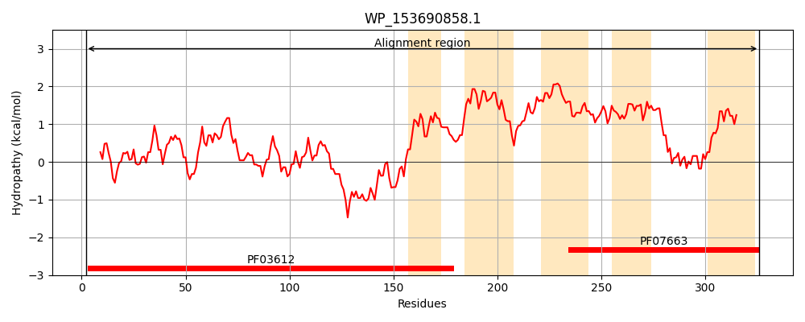
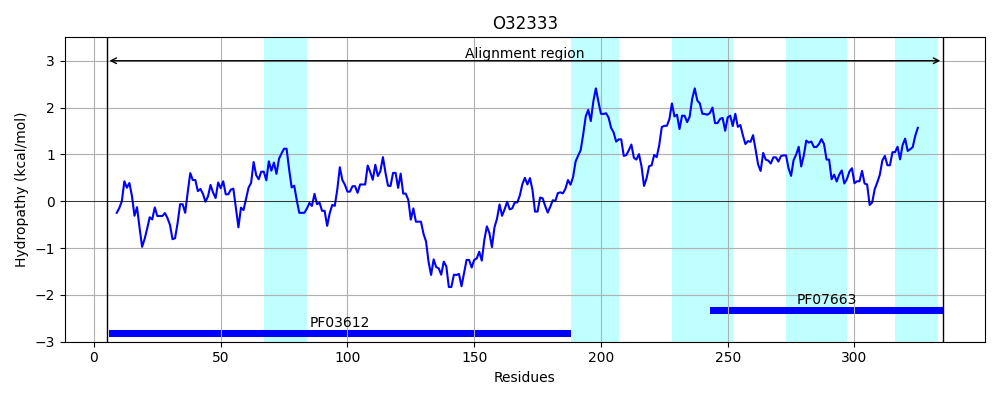
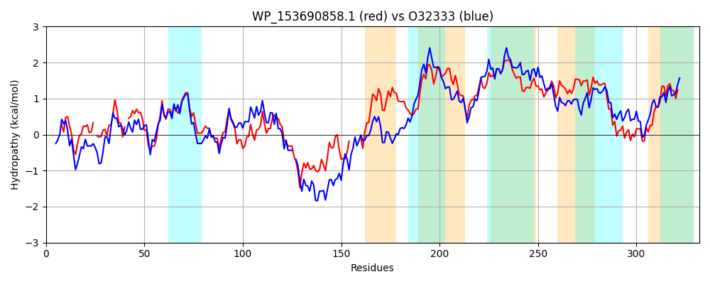

Hit Accession: O32333
Hit TCID: 4.A.4.1.2
Hit Description: gnl|BL_ORD_ID|7107 gnl|TC-DB|O32333|4.A.4.1.2 Glucitol/sorbitol-specific phosphotransferase enzyme IIB component OS=Clostridium beijerinckii (strain ATCC 51743 / NCIMB 8052) GN=srlE PE=4 SV=1
Mach Len: 332
e:0.000000
Query TMS Count : 5
Hit TMS Count: 5
TMS-Overlap Score: 2.850000
Predicted Substrates:CHEBI:30911;glucitol
BLAST Alignment:
Score: 692 , Bit scores: 271 bits, E-value: 1.2e-89, Alignment length: 332, Percentage identity: 44
Query: 2 NTVLIPPGPGGYGKGLWLPVGSGKK-VLSLTGREIHPVAIE-IGALTESEIVNGFSDIPPDNDILCVVINCAGSLRCGLYPQKGIPTINVLPTWRAGPLAHFITEDNYVSGVTMEQLVLVDTAEAPDIKPETTQEPAPRIVTTPPPARGAEKLVR-----MVEQTGTAVGHVIALLFAASREAVDVSLRNVIPFMAFVSLLIALVQETALGSLIAHALTPLANSLWGLVLLSLICGIPFLSPVLGPGAAISQVIGVMIGTQIGAGAISPAFALPALFAINVQVGCDFVPVGLSMQEAKPETIAKGVPAFLLSRQLTGPLAVIIGWLFSLGLF 326
N + I G GG+G L + GK +L +TG P +E I LT + VNGF P+ I V+I+C G+LRCG+YPQK IPTINV+P ++GPLA FITED YVS V + Q+ L D++ P IK E R + ++ L +V++ G G V+ L+ A R+AV + ++PFMAFV++LI ++Q + G+ A L PLA + GL++L IC IP LS +LGPGA I+Q++G +IG +IG G I P+ ALPALFAIN Q CDF+PVGL + EA+PET+ GVP+ L SR + G V + W+ S+GL+
Sbjct: 5 NAIKIVKGSGGFGGPLTVKPEEGKDTLLYITGGGAEPEIVEKIVNLTGCKAVNGFKTSVPEEQIFLVIIDCGGTLRCGIYPQKRIPTINVMPVGKSGPLAKFITEDIYVSAVGLNQISLADSSAEP-IKSTKVPEEGKREFKYSADKKVSQSLAENSKSSIVQKIGMGAGKVVNTLYQAGRDAVQSMITTILPFMAFVAMLIGIIQGSGFGNWFAKILVPLAGNGIGLMILGFICSIPLLSALLGPGAVIAQIVGTLIGVEIGKGTIPPSLALPALFAINTQCACDFIPVGLGLAEAEPETVEVGVPSVLYSRFMIGVPRVAVAWVASIGLY 335 | Protein Hydropathy Plots: |
|---|
|  |  |
Pairwise Alignment-Hydropathy Plot:
|
|---|
|  |